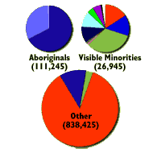

The Land
The People
The Culture
The Climate
|

|

| Saskatchewan is a Canadian Province situated in the heart of the Prairies. From the rolling grasslands in the south to the pristine lakes and forests in the north, Saskatchewan excels in natural beauty. Visitors will remember the spectacular skies with breathtaking sunsets and magical northern lights. Saskatchewan is truly the Land of Living Skies.
|
 The Land
The Land
Saskatchewan is part of Western Canada. The east and west boundaries are 102 and 110 degrees longitude west of the Greenwich Meridian. The south and north boundaries are 49 and 60 degrees latitude north of the equator. The total area is 651,900 km2 (65.2 million ha). Freshwater is in abundance in the Province occupying over 12.5% of the total area or 81,600 km2.
The highest points of land above sea level:
- Cypress Hills - 1,468 m
- Wood Mountain - 1,013 m
- Vermilion Hills - 785 m
|
|
The People
Data from the 1996 population census shows that there were just under one million people in Saskatchewan (976,615). The rural population continues to decline to less than 37 percent (363, 059) of the total population. Saskatoon is the largest city with 216,445 people. The capital city, Regina, is the second largest with a population of 191,485.
| 
The Culture
Canada boasts a rich heritage in culture derived from our aboriginal people and immigrants from all over the world. The Province of Saskatchewan is no exception. Throughout the year, cultural events such as Folkfest, held annually in Saskatoon in August, and Mosaic in Regina in June, demonstrate our rich heritage in music, dance, food and friendship.
|
|
|
The Climate
The Saskatchewan climate is characterized by warm, dry summers and cold, dry winters. In the southern farmed area, a gradual increase in available moisture follows a line moving from the southwest to the northeastern part of the Province. Annual precipitation normals are in the range of 320 to 450 mm in the southern region (below about 54 degrees N) where most of the population live. The northern forest area is wetter. In the far north there are few frost-free days and the subsoils remain frozen throughout the year.
| Location | Annual Precipitation (mm) | Frost Free Period (days) | Degree Days above 5° Celsius |
| Saskatoon | 347 | 118 | 1601 |
| Regina | 364 | 113 | 1661 |
| North Battleford | 368 | 122 | 1548 |
| Prince Albert | 406 | 95 | 1416 |
| Estevan | 418 | 128 | 1783 |
| Kindersley | 324 | 116 | 1592 |
| Moose Jaw | 357 | 122 | 1773 |
| Swift Current | 367 | 120 | 1583 |
| Yorkton | 436 | 112 | 1530 |
|
|
|